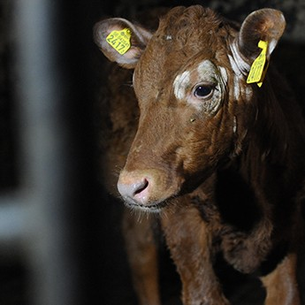
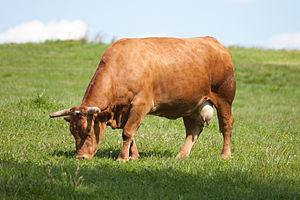

Cows and Steer
Bò
Bò là tên gọi chung để chỉ các loài động vật trong chi động vật có vú với danh pháp khoa học Bos, bao gồm các dạng bò hoang dã và bò thuần hóa. Chi Bos có thể phân chia thành 4 phân chi là: Bos, Bibos, Novibos, Poephagus, nhưng sự khác biệt giữa chúng vẫn còn gây tranh cãi. Chi này hiện còn 5 loài còn sinh tồn.
Thời gian mang thai:
Bò nhà: 283 ngày, Bò Tây Tạng: 257 – 270 ngày, Bò banteng: 297 ngày, Bò tót nhà: 274 ngày
Tuổi thọ:
Bò nhà: 18 – 22 năm